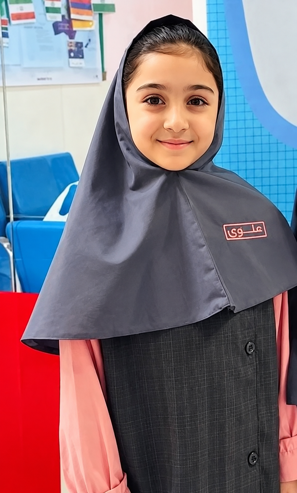

🏀
دنیای بسکتبال
پیشنهاد بازیها و مسابقههای دوستانه برای تقویت همکاری، تمرکز و روحیه تیمی.
سلام! من بنیتا فاطمی هستم. دوست دارم مدرسهمان پر از شور، دوستی و فعالیتهای ورزشی باشد؛ جایی که همه بتوانیم تواناییهایمان را نشان بدهیم و کنار هم پیشرفت کنیم.

بسکتبال به ما پاسدادن و همکاری را یاد میدهد؛ والیبال یادمان میدهد برای رسیدن به یک هدف به هم اعتماد کنیم. مهم این است که کنار هم بازی کنیم، به هم احترام بگذاریم و از تلاشکردن لذت ببریم.
پیشنهاد بازیها و مسابقههای دوستانه برای تقویت همکاری، تمرکز و روحیه تیمی.
تمرینهای گروهی و بازیهای دوستانه با فرصت مشارکت برای دانشآموزان علاقهمند.
احترام، رفاقت و فرصت برابر برای مشارکت؛ چون هر دانشآموز عضوی ارزشمند از مدرسه است.
میخواهم صدای دوستانم را بشنوم و پیشنهادهای ورزشی آنها را برای بررسی با شورای دانشآموزی و مسئولان مدرسه در میان بگذارم.
این موارد پیشنهادهای بنیتا هستند و اجرای آنها به امکانات مدرسه و موافقت مسئولان مربوط بستگی دارد.
مطالب کوتاه و خواندنی درباره بسکتبال، والیبال و روحیه تیمی.
بازیکن خوب فقط به سبد نگاه نمیکند؛ همتیمیهایش را هم میبیند. پاس دقیق، ارتباط و اعتماد میتوانند جریان بازی را تغییر دهند.
دریافت، پاس و حمله به هماهنگی نیاز دارند. وقتی بازیکنان با هم ارتباط دارند، هر ضربه فرصتی برای ساختن یک حرکت تیمی است.
تمرین، احترام به حریف، رعایت قوانین و بلندشدن بعد از اشتباه هم بخشی از قهرمانیاند؛ حتی وقتی نتیجه دلخواه نیست.
این مطالب آموزشی هستند و خبر زنده یا گزارش مسابقات روز محسوب نمیشوند.
اگر قرار باشد یک فعالیت ورزشی تازه در مدرسه برگزار شود، بسکتبال را انتخاب میکنی، والیبال یا یک بازی گروهی دیگر؟
فعلاً پیشنهادت را حضوری به بنیتا بگو تا برای بررسی منتقل شود.